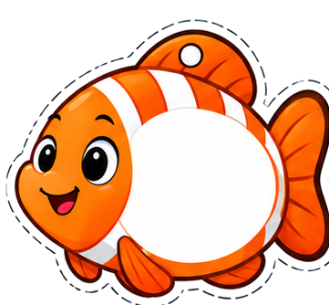
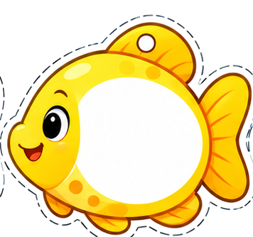
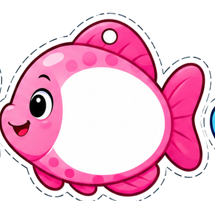
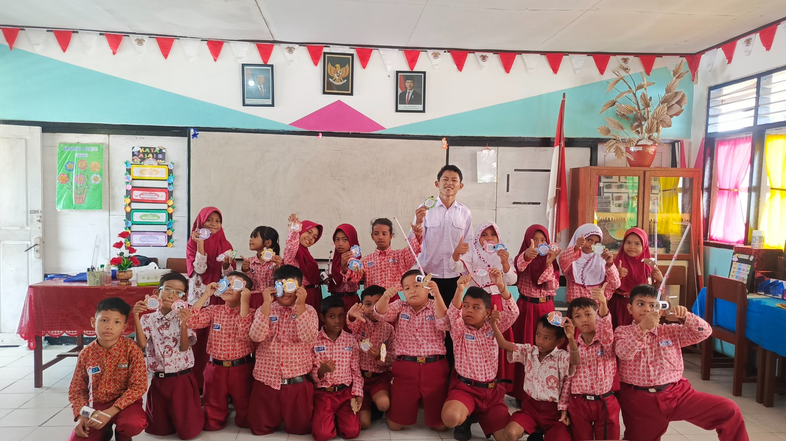
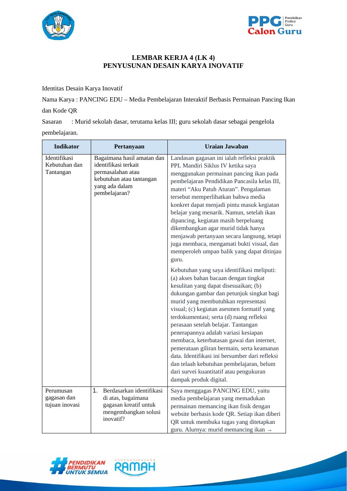
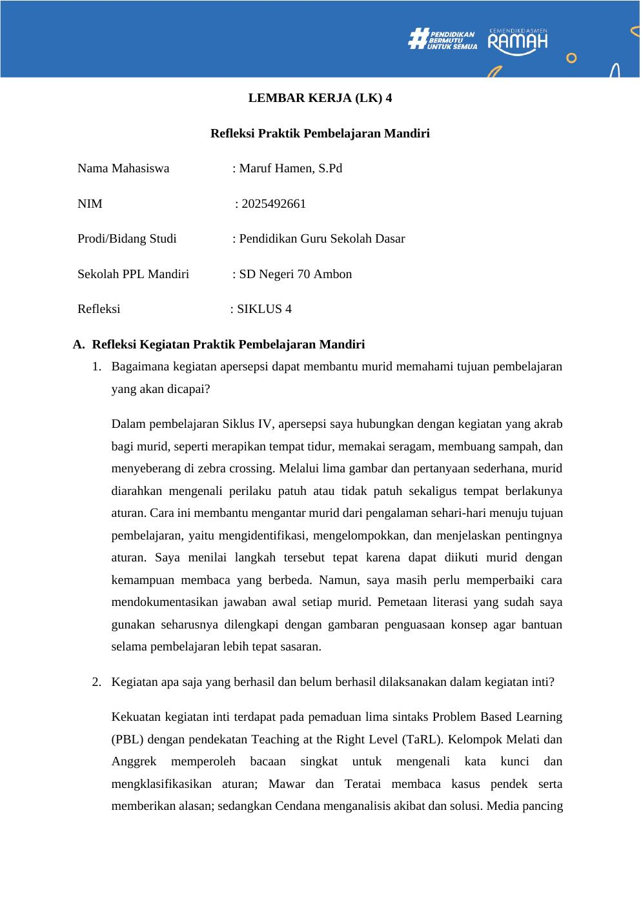

Pengalaman PPL
Memanfaatkan permainan pancing ikan dalam pembelajaran Pendidikan Pancasila kelas III, materi Aku Patuh Aturan.
Praktik fisik telah dilaksanakanPANCING EDU memadukan media pancing ikan fisik dengan website berbasis QR. Murid belajar melalui kegiatan memancing, mengamati gambar, membaca, menjawab kuis, dan merefleksikan perasaan.
Maruf Hamen, S.Pd · PPG Prajabatan PGSD · Universitas Pattimura



PANCING • PINDAI • PAHAMIBagian ini melanjutkan refleksi Semester I, Semester II, dan refleksi akhir PPG dalam satu portofolio yang sama.
Memanfaatkan permainan pancing ikan dalam pembelajaran Pendidikan Pancasila kelas III, materi Aku Patuh Aturan.
Praktik fisik telah dilaksanakanMenelaah kebutuhan variasi bacaan, dukungan visual, asesmen formatif, giliran bermain, dan umpan balik yang dapat ditinjau guru.
Refleksi dan telaah kebutuhanMembuat website pengelolaan bacaan, kuis, tugas ikan QR, publikasi sesi, hasil latihan, dan check-in perasaan.
Prototipe dan uji teknisMenyiapkan evaluasi keterlibatan, pemahaman, aksesibilitas, keterlaksanaan, dan keandalan teknologi bersama murid.
Tahap penerapan penuh direncanakan
Dokumentasi kegiatan pembelajaran menggunakan media pancing fisikPada PPL Mandiri Siklus IV, saya menggunakan permainan pancing ikan untuk mengajak murid terlibat dalam pembelajaran Pendidikan Pancasila tentang aturan. Kegiatan konkret tersebut menjadi titik awal untuk memikirkan pengalaman belajar yang lebih berkelanjutan setelah ikan dipancing.
Saya kemudian merancang pengembangan yang menyediakan bahan bacaan, dukungan gambar, pertanyaan pengamatan, dan kuis, serta merekam tanggapan murid sebagai bahan refleksi guru.
Media fisik mempertahankan pengalaman bermain, sedangkan media digital mendukung eksplorasi materi dan asesmen formatif.
Alat pancing, ikan bergambar, dan kode QR sebagai jembatan aktivitas konkret menuju materi yang dipilih guru. Satu set ikan dapat digunakan kembali dengan konten berbeda selama kode perangkat tetap sama.
Guru menyusun bacaan, gambar, pertanyaan, kuis, sesi, dan tugas ikan. Murid menggunakan kamera HP untuk mengakses materi, memberikan jawaban, serta melakukan check-in perasaan secara sukarela.
Website PANCING EDU terbuka pada alamat terpisah; portofolio ini tetap menjadi tempat dokumentasi akademiknya.
Kelima prinsip ini dinilai secara kontekstual. Efektivitas pembelajaran tetap perlu dibuktikan melalui uji kelas.
Mengintegrasikan media pancing yang telah digunakan dengan QR dan sesi pembelajaran dinamis pada konteks praktik yang sama.
Menggabungkan permainan konkret, teks, gambar, kuis, serta refleksi sosial emosional dalam satu alur kegiatan.
Memberi peluang guru menggunakan kembali satu set ikan dan menelaah respons formatif murid sebagai tindak lanjut.
Konten dapat disesuaikan dengan kelas, kebutuhan membaca, capaian pembelajaran, dan lingkungan murid.
Masih memerlukan observasi terencana dan perbandingan asesmen setara sebelum dapat dinyatakan terbukti meningkatkan belajar.
Media pancing fisik telah digunakan pada pembelajaran PPL. Website dan integrasi QR telah dikembangkan dan diperiksa pada sebagian alur teknis, tetapi belum memiliki bukti uji kelas lengkap untuk menyimpulkan peningkatan hasil belajar atau motivasi akibat produk digital.
Seperti koleksi artefak Semester I dan II, setiap dokumen ditampilkan dengan pratinjau asli dan tombol untuk membuka sumbernya. Ketiga artefak ini menghubungkan refleksi PPL, perancangan LK 4, dan praktik pembelajaran.

Identifikasi kebutuhan, gagasan, prototipe, rencana implementasi, evaluasi, dan prinsip inovasi PANCING EDU.

Pengalaman menggunakan media pancing pada pembelajaran Aku Patuh Aturan sebagai dasar pengembangan PANCING EDU.
Dokumentasi penggunaan media fisik di kelas sebagai titik awal perancangan pengalaman belajar terintegrasi QR.